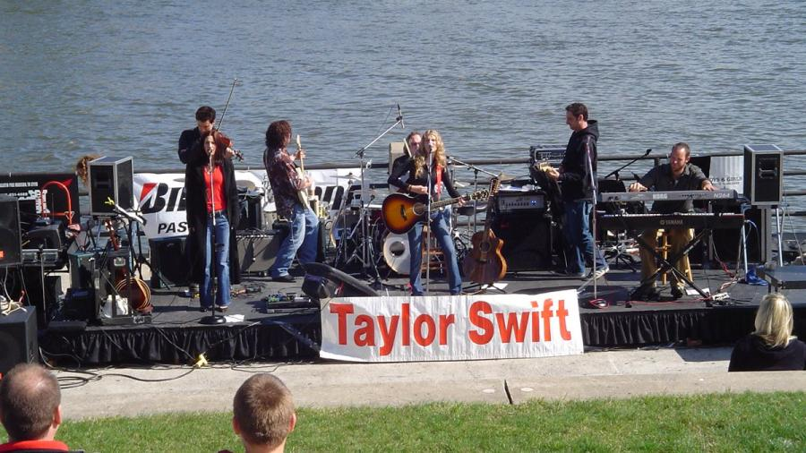
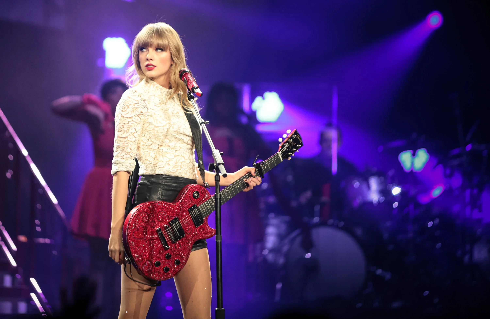

Un recorrido por su historia
Taylor Swift nació el 13 de diciembre de 1989 en Reading, Pensilvania, Estados Unidos. Desde muy chica mostró un profundo interés por la música, en especial por el género country. Comenzó a componer canciones a los 12 años y a tocar la guitarra, demostrando un talento precoz. A los 14, se mudó con su familia a Nashville, Tennessee, la capital del country, para perseguir su sueño artístico. Su álbum debut, Taylor Swift (2006), la posicionó rápidamente como una joven promesa, gracias a éxitos como "Tim McGraw" y "Teardrops on My Guitar". Con Fearless (2008), se consagró a nivel nacional e internacional, ganando varios premios Grammy. Su estilo se caracterizaba por letras personales que narraban historias de amor, desamor y crecimiento. En Speak Now (2010) y Red (2012), amplió su sonido con toques de pop y rock, mostrando madurez artística. A lo largo de esta etapa, Swift también comenzó a ganar notoriedad por su fuerte presencia mediática y conexión con sus fans.
El gran salto al pop lo dio con el álbum 1989 (2014), que incluyó éxitos como "Shake It Off", "Blank Space" y "Style", transformándola en una superestrella global. Luego lanzó Reputation (2017), con una estética más oscura y centrada en temas de imagen pública y poder. En Lover (2019) regresó a un tono más romántico y luminoso. Durante la pandemia sorprendió con Folklore y Evermore (2020), dos discos más introspectivos y alternativos que fueron aclamados por la crítica. En 2021 inició la regrabación de sus primeros discos como Fearless (Taylor's Version) y Red (Taylor's Version), en respuesta a la pérdida de los derechos de sus masters, reforzando su postura sobre el control artístico. En 2023 lanzó Midnights, y comenzó The Eras Tour, una gira monumental que batió récords de asistencia y recaudación. Hoy, Taylor Swift es una de las artistas más influyentes y versátiles de la música contemporánea, con millones de seguidores y una carrera que sigue creciendo con fuerza.
 